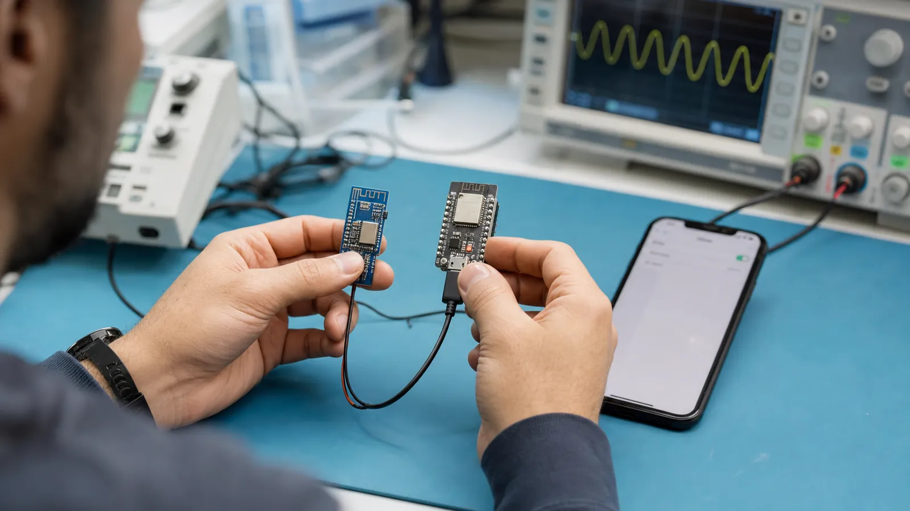

BLE یا Bluetooth Low Energy شاخهای از خانواده بلوتوث است که برای دستگاههای کممصرف، سنسورها، پوشیدنیها و محصولات باتریخور طراحی شده است. هدف این مرحله آن است که قبل از ورود به پکت و کدنویسی، تصویر درستی از مسئله داشته باشید و بدانید BLE چه کاری را خوب انجام میدهد و چه کاری را نه.
Bluetooth Classic برای ارتباط پیوستهای مثل صدا و انتقال نسبتاً حجیم داده مناسب است. BLE از نسخه 4.0 وارد مشخصات بلوتوث شد و بهجای روشن نگه داشتن دائمی رادیو، بیشتر زمان را در خواب میگذراند و در بازههای کوتاه تبلیغ یا تبادل داده میکند. نسخههای 4.2 و خانواده 5 قابلیتهایی مانند بسته بزرگتر، سرعت 2M، برد بیشتر با LE Coded و Advertising توسعهیافته را اضافه کردند. شماره نسخه بهتنهایی کافی نیست؛ باید جدول قابلیتهای تراشه و پشته نرمافزاری را هم بررسی کنید.
Wi-Fi برای پهنای باند زیاد و اتصال مستقیم به شبکه IP بهتر است اما معمولاً انرژی بیشتری مصرف میکند. Zigbee برای شبکه مش کممصرف چندگرهی مناسب است. NFC برد بسیار کوتاه و تجربه نزدیککردن دستگاهها را فراهم میکند. LoRa داده کم را در مسافت زیاد میفرستد. UART و USB بیسیم نیستند اما برای دیباگ، برنامهریزی و اتصال مطمئن محلی همچنان مهماند. انتخاب درست از نیاز محصول شروع میشود، نه از نام فناوری.
برای هر پروژه پنج سؤال بنویسید: چه مقدار داده در ثانیه دارید؟ بیشترین تأخیر قابل قبول چقدر است؟ دستگاه چند ماه یا چند سال باید با باتری کار کند؟ فاصله و محیط انتشار چیست؟ ارتباط نقطهبهنقطه است یا چندگرهی؟ BLE برای پیامهای کوتاه، کشف نزدیک، اتصال به موبایل و مصرف کم گزینه بسیار خوبی است؛ برای ویدئو یا فایل بزرگ انتخاب مناسبی نیست.
فرض کنید یک دماسنج هر 10 ثانیه فقط دما و رطوبت را میفرستد. این داده شاید کمتر از 10 بایت باشد و رادیو لازم نیست دائم روشن بماند؛ BLE مناسب است. اما دوربین باید پیوسته چند مگابیت داده بفرستد، بنابراین Wi-Fi منطقیتر است. همین مقایسه ساده جلوی بسیاری از انتخابهای اشتباه ابتدای پروژه را میگیرد.
سه محصول «دماسنج باتریخور»، «اسپیکر بیسیم» و «دوربین نظارتی» را روی کاغذ بنویسید. برای هرکدام حجم داده، تأخیر، برد و منبع تغذیه را مشخص کنید. سپس دلیل انتخاب BLE، Classic یا Wi-Fi را در یک جمله بنویسید.